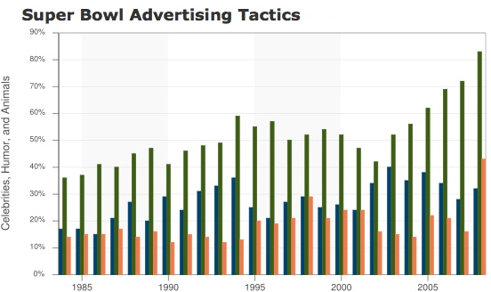
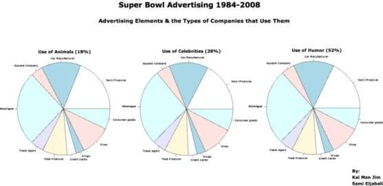

Kai Man Jim S133AU
Sami Eljabali S133BQ
Statistics 133 Project #1
4/3/2008
Remodeling "Super Bowl Advertising"
A. Deconstruction
1) Describe the data used in the plot.
- The plot uses data the New York Times gathered from 1984 until 2008 that categorizes the various types of companies and their commercial tactics, which are the following:
-
| Types of Companies |
Tactics Used |
| Apparel | Humor |
| Credit | Animals |
| Food | Celebrities |
| Vehicles | |
| Beverages | |
| Drugs | |
| Tech/Financial | |
| Consumer | |
| Films | |
| Travel | |
2) Describe the plot using the terminology introduced in class.
- The plot had Celebrities, Animals, and Humor Vs Time in a Box-plot format.
3) Briefly explain what you think the point is attempting to make.
- It is trying to show how companies think they can get the audience to consume their products via commercials.
B. Reconstruction

1) Provide at least two examples from Wainer's dirty dozen that are in the plot that you chose.
- #1 "Show as Little Data as possible."
- We noticed that author omitted a lot of visual data by not showing the correlation between the types of commercials(i.e. humor) and companies that were advertising(i.e. beverages). This insight sheds light on the companies and how they target their consumers, which is crucial to the overall message.
- #2 "Hide the data you do show."
-
- We saw that because, the author had all 3 tactics laid out for all 24 years, it was difficult to visually determine which tactic was used more often than the others, and by how much. For example in finding out whether Celebrities or Animals were used more, one has to examine the graph a few times to give a definite answer.

- 2) Improve upon the plot by adding additional data or more features to it, and explain how your new version of the plot makes a clearer, more informative observation.
- Our pie charts clearly show how much each kind of company uses Humor, Animals, & Celebrities in their advertising campaigns. It is also now easy to compare and contrast between the different tactics of which each company uses. We also placed the overall usage of these tactics next to its name.
C. Implementation
We used R to calculate the correlations between companies and tactics. This was made by averaging the amount of commercials made in a year then multiplying it by the percent of tactic (i.e.humorous ones), then multiplying it by the types of commercials that were made that year.
Here's the code for the two functions that caculated
-
# AvgType is the main function which calls AvgRow and loop 25 times to
# calculate an average for a certain item from year 1984 to 2008.
AvgType function (sumtable, type, category){
arg = 0
for ( i in 1:25)
arg = arg + AvgRow(sumtable, type, category, i)
return arg / 25
}
# AvgRow is a helper function which calculates the average of an specific
# item with respect to all items in that row.
AvgRow function (sumtable, type, category, index){
return type[index] / sumtable[index] * category[index]
}
For the complete set of code click here.